The cipher slip in Tanquerey's Synopsis theologiae dogmaticae (1901)
Source: r/codes: "Unknown cipher on a slip found in a 1901 theology book (Poland)", posted by u/ColdDivide4423. The slip was found at p. 325 (De Angelis) of A. Tanquerey, Synopsis theologiae dogmaticae, vol. 1, bought from an antiquarian bookshop in Poland.
solved The slip is Polish, written in one home-made substitution alphabet that keeps Polish diacritics:
Komunikacja.
1. Praktyka: Zgodzenie się na wolę Bożą.
"Communication. 1. Practice: consent to God's will."
high confidence the sentence after the colon. good the title Komunikacja: it is the only fit among 3.2 million Polish word forms. probable the heading Praktyka: it is the only fit, but one glyph is irregular (see below).
Nothing demonic is going on. "Zgodzenie się na wolę Bożą" is a stock phrase of Catholic ascetical writing, about resignation to God's will. The Polish translation of Tanquerey's own ascetical manual uses the near-identical "zdanie się na wolę bożą". It also uses "Praktyka" as an outline heading in exactly this way ("4. Praktyka pokory", "Praktyka umartwienia"). The note has the shape of a seminary or catechesis outline: topic, numbered point, practical application. The reverse side ("1. Powołanie. 2. Katechizmy." = "1. Vocation. 2. Catechisms.") is a numbered list in the same layout. What "Komunikacja" means as a topic is not clear from one line. It could be prayer as communication with God, a catechetics lesson, or even the "communication with spirits" discussed on the very page where the slip sat. The slip itself contains nothing occult.
The slip


Interlinear decipherment
■ sentence key■ capital■ new letters from the title/heading pass■ irregular■ punctuation
Hover over or click a glyph to highlight every occurrence of that glyph (amber). Hover over or click a letter to highlight every occurrence of that letter (blue), including letters written with more than one glyph form. A click pins the selection; click it again, or anywhere outside, to clear it. Esc also clears.
 K
K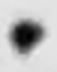
o m
m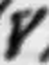
u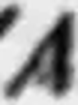
n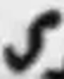
i k
k a
a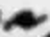
c j
j a ,
a ,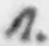
1. P
P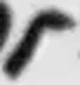
r a
a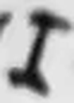
k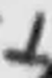
t y
y k?
k? a
a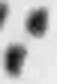
: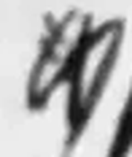
Z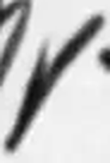
g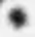
o d
d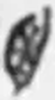
z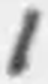
e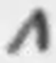
n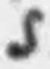
i e
e s
s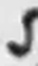
i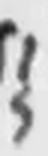
ę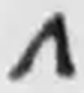
n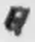
a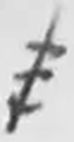
w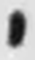
o l
l ę
ę B
B o
o ż
ż ą
ą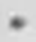
.The key
From the sentence (thin pen)
Two features made the system crackable. Polish diacritics are added on top of the cipher letter: e→ę and a→ą get a zig-zag ogonek, and z→ż gets a dot above. Capitals appear where Polish orthography wants them: Zgodzenie, Bożą, and the first letters of the title and heading.
| glyph | description | Polish | evidence |
|---|---|---|---|
| small mid-height dot | o | Appears inside words wherever Polish needs o (zgodzenie, wolę, Bożą, and Komunikacja). My first pass took it for punctuation, and that one mistake hid the whole solution. | |
| short slanted stroke (like a dotless ı) | e | Ends the 9-glyph word twice (…enie). | |
| the same stroke + zigzag hook below | ę | The hook is a Polish ogonek. The cipher keeps diacritics: e→ę is drawn as cipher-e + hook. | |
| small square (dotted in the bold lines) | a | na; the same square with a hook ends the line as ą; dotted squares give the a’s of Komunikacja and Praktyka. | |
| square + zigzag hook below | ą | Second ogonek glyph. It pairs with the square = a, as the stroke pairs with e/ę. |
| Λ (pointed arch) | n | …enie, na; the bold title has the same arch with a cross-stroke (Komunikacja). | |
| S | i | …enie, się and Komunikacja: same glyph, same letter. | |
| filled triangle ∆ | s | się. |
| staff with two crossbars ‡ | w | wolę. | |
| upright with flat foot to the left ┘ | l | wolę. Compare the next row: the d glyph has an up-turned, bowl-like foot. |
| upright with up-turned bowl (open cursive d) | d | zgodzenie. At low zoom it looks like the l glyph; side by side the two differ. |
| long-armed check mark √ | g | zgodzenie (w is already ‡, so zwodzenie is excluded). | |
| almond/oval with dots | z | zgodzenie. | |
| larger slashed oval with an "x" mark | Z (capital) | Sentence-initial Z. It is a bigger, decorated oval like the lower-case z. | |
| oval-with-x + dot above | ż | Bożą. The dot above is the Polish over-dot: z→ż, again written as cipher-z + diacritic. |
| L-shape └ | B (capital) | Bożą. Capitalised exactly where Polish religious writing capitalises Boża. |
Added by the title and heading (bold pen)
None of these letters occurs in the sentence (k, m, u, c, j, p, r, t, y). Nothing contradicts the sentence key, so this is one alphabet written with a heavier pen, not a second cipher. Several glyphs are visibly flipped Latin letters: ⊥ = t, ʎ = y, b = P, and V/Λ = u/n.
| glyph | description | Polish | evidence |
|---|---|---|---|
| serifed Ɪ | k | Komunikacja and Praktyka. The big decorated I that opens the title is the same glyph as a capital: Komunikacja. |
| N with a long lead-in stroke | m | Komunikacja. |
| V | u | Komunikacja. V for u is the Latin-capital habit. V and Λ (u and n) are drawn as rotations of each other, like the letters themselves. | |
| short tilde-like stroke ~ | c | Komunikacja. | |
| "4"/ʎ with a foot stroke | j | Komunikacja. |
| b-shape (a P flipped top-to-bottom) | P (capital) | Praktyka, at the start of the heading word. |
| r | r | Praktyka. | |
| inverted T ⊥ | t | Praktyka. It is an upside-down T. | |
| ʎ with a dot in its loop | y | Praktyka. It is an upside-down y. It differs from the title’s j glyph, which has a foot stroke and no dot. |
| dark blob with a light centre | k ? | Praktyka. This is the weak point: the word needs a second k here, but the glyph does not look like the Ɪ used for k elsewhere. It may be a blotted or variant k. |
How it was cracked
- Known scripts first. I compared the glyphs against Glagolitic, Phoenician/Paleo-Hebrew, Old Italic, Old Hungarian, Coptic and Gothic, and against Greek, Cyrillic and Hebrew letter shapes. A few shapes overlap by chance (Λ, ∆, θ), but no script accounts for the set. It is an invented alphabet.
- A test that failed usefully. My first transcription treated the mid-dots as punctuation, merged the two "foot" glyphs, and treated the two oval glyphs as unrelated. I then asked whether any one-glyph-one-letter reading turned every word into a dictionary word. I tried Polish, Tanquerey's Latin, German, French, Italian and English. Zero full-line solutions came back in every language. That pointed to a wrong transcription model, not a hopeless text.
- The diacritic clue. Two glyphs have a zig-zag hook hanging below the line. One is the short stroke that ends a 9-glyph word twice. The other is the square that ends the line. A hook under a vowel is a Polish ogonek, so stroke/stroke+hook = e/ę and square/square+hook = a/ą. A 3-glyph word ends in the hooked stroke (ę), and its middle glyph S also appears in the 9-glyph word's ending. That makes it się, with S = i. The next 2-glyph word, sharing the Λ, becomes na. That gives the very common Polish frame "…enie się na …".
- The dot is a letter. Read as o, the dot completes wolę and the idiom na wolę Bożą. The last word is then Bożą: capital B, o, a z-oval with a dot above (ż), and the hooked square (ą).
- Separating d from l. Wolę and the 9-glyph word seemed to need the same glyph for both l and d. At high zoom they differ: the l glyph has a flat foot, and the d glyph has an up-turned bowl. The 9-glyph word is then Zgodzenie. Its first and fifth glyphs are both z-ovals, the first larger as a capital. The √ glyph cannot be w (‡ already is), so it is g.
- Checking uniqueness of the sentence. I took the final glyph model and searched a ~70,000-form Polish list. It gives 377 word-consistent readings of the five words. "…enie się na wolę Bożą" ranks in the top five by plain word frequency, and it is the only idiomatic one; the rest are word salad such as "chodzenie się na mogę bożą".
- Title and heading (second pass). See the next section.
Second pass: the title and the heading word
The first pass read the title as a roman numeral "I." followed by 9 unknown glyphs. That segmentation was wrong. The big decorated I is the same serifed Ɪ glyph that recurs at title position 7 and in the heading word, just enlarged as an initial. The dot after it is the o-dot from the sentence key. So the title is one 11-glyph word:
Ɪ · N* V Λ̶ S Ɪ ▫ ~ 4 ▫ → X o ? ? n i X a ? ? a
The positions pinned by the sentence key are o, i, a…a, and n (the title's arch is the sentence's Λ = n with a cross-stroke). Together with the repeat of Ɪ at positions 1 and 7, they leave a single Polish word. Funnel over the full SJP word list (3.2 million inflected forms):
| constraint (11-letter forms) | forms left |
|---|---|
| all 11-letter forms | 448,640 |
| repeat pattern (Ɪ at 1 & 7, square at 8 & 11, the rest distinct) | 197 |
| + dot = o, S = i, square = a | 3 (kodyfikacja, komplikacja, komunikacja) |
| + arch = n | 1: komunikacja |
That fixes Ɪ = k, N* = m, V = u, ~ = c and the footed 4 = j. None of these letters occurs in the decoded sentence, so nothing conflicts. The heading word (8 glyphs) becomes:
b r ▫ Ɪ ⊥ 4· ■ ▫ → ? ? a k ? ? ? a
There are 216,448 eight-letter forms in the list; 44 have the shape ??ak???a. Require the four still-unknown glyphs (b, r, ⊥, dotted 4) to be four different letters not already in the key. Exactly one form survives: praktyka. It reads P (a flipped P), r, a, k, t (an upside-down T), y (an upside-down y), and a final a. The cost is glyph 7, the dark blob. "Praktyka" needs a second k there, but the blob does not look like the Ɪ used for k. It may be a blotted or variant k. Without it there is no Polish word at all, and allowing the blob to be any letter already in the key still gives only praktyka.
Ruled out along the way
- Known historical scripts: Glagolitic, Phoenician/Paleo-Hebrew, Old Italic, Old Hungarian (rovás), Coptic, Gothic, and Greek/Cyrillic/Hebrew transliteration.
- Mirror writing, 180° rotation, and 90° rotation of the line.
- Latin-letter-literal readings, e.g. the title as "INVASIO(NE)…": they don't extend across words.
- Plain one-glyph-one-letter substitution with dots as punctuation, in Polish, Latin, German, French, Italian and English: zero consistent full-line solutions.
- Title as roman numeral "I." + 9-glyph word, or "I." + an o-word: no meaningful Polish or Latin fit.
Sources and tools
- Reddit thread (images and OP's description): r/codes 1y5g8r3, u/ColdDivide4423. The comments could not be fetched from here.
- A. Tanquerey, Zarys teologji ascetycznej i mistycznej, t. 2 (Polish tr., 1949), OCR text at archive.org/details/Tanquerey.Zarys2: "zdanie się na wolę bożą", "zgodzeniu się na działanie Boga", "Praktyka pokory", "Praktyka umartwienia".
- Tanquerey's Latin Synopsis OCR texts used as a Latin test vocabulary: synopsistheolog00tanqgoog (1896, incl. De magia, magnetismo, spiritismo), synopsistheologi00tanq, synopsistheolog03tanq.
- Polish word lists: SJP "słownik do gier" (3.2M inflected forms, Nov 2026) and hermitdave/FrequencyWords (2018, 50k, also used for the other languages).
- Scripts in work/: linesearch.py, sub*.py (pattern searches), uniq_check.py (sentence uniqueness), title_search.py and title_counts.py (title/heading funnel), make_glyphs.py (crops), build_report.py (this page). The word lists were downloaded to a temporary folder and are not stored here.